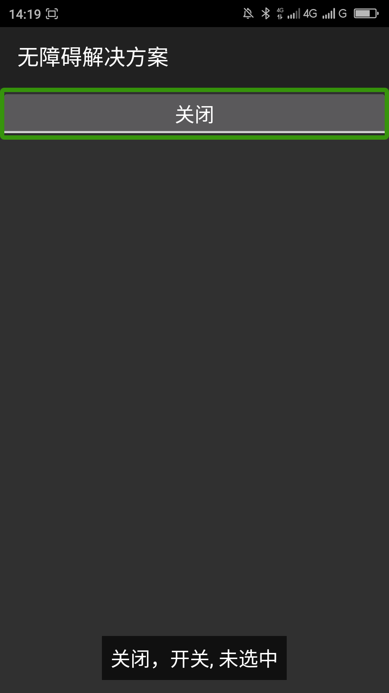
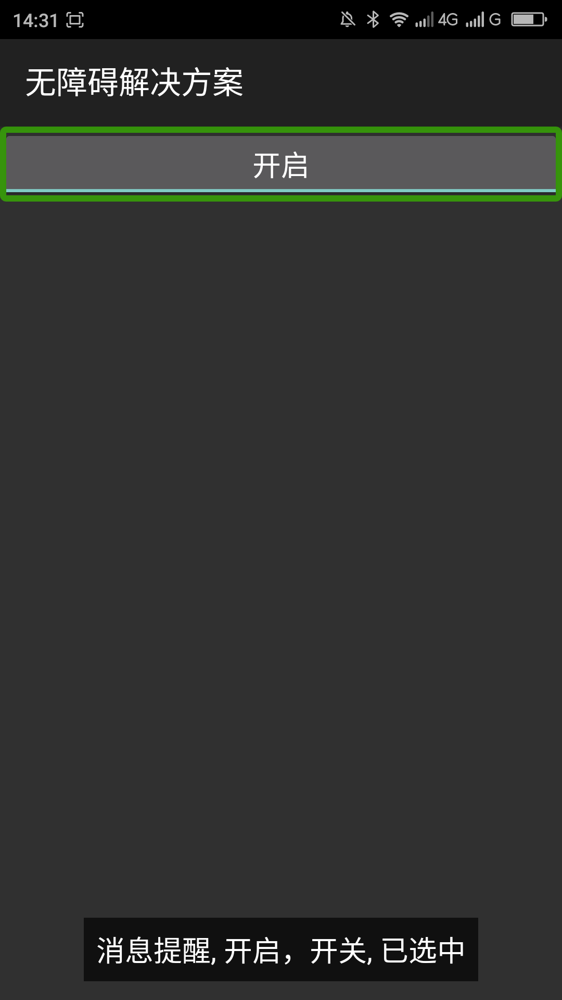
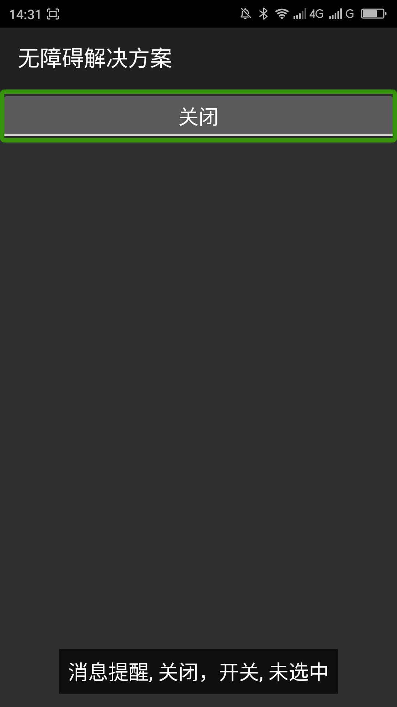
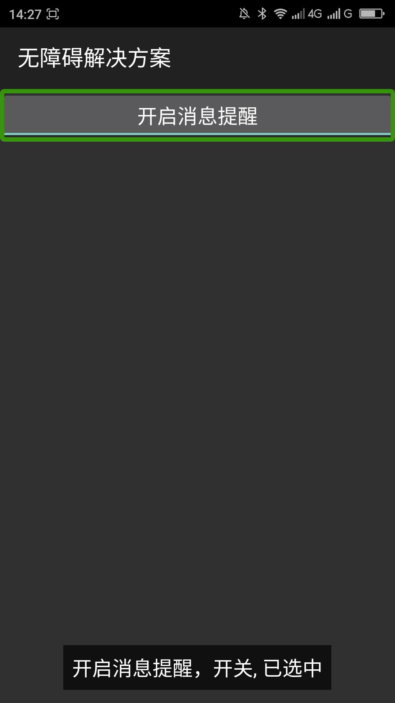
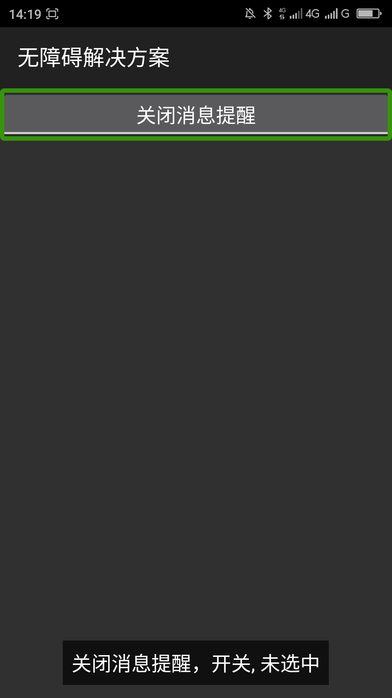

返回
开关控件（ToggleButton）有状态提示文本显示，如果使用开关控件没有另外设置状态提示文本（textOn、textOff）默认显示的是“开”或“关”。当用户浏览到使用默认状态提示文本的开关控件的时候朗读为“开 开关 已选中”（或“关 开关 未选中”），用户很难通过这个提示知道此开关控件是控制什么功能的。
在使用开关控件的默认状态文本提示的时候给开关控件添加Android：contentDescription属性，此属性不会被显示出来，此属性可以帮助用户了解此开关控件的功能、目的。添加了此属性也不会导致不朗读开关控件的状态提示文本不朗读。
提示：使用开关控件的时候推荐自己添加状态提示文本，自己添加状态提示文本无障碍体验比添加Android:contentDescription属性好。添加状态提示文本的方式如android:textOff=”关闭消息提醒”、android:textOn=”开启消息提醒”。
|  | |
| 优化前，屏幕阅读器朗读“关闭，开关，未选中” | |
| 使用android:contentDescription： | |
|  |  |
| 双击前，屏幕阅读器朗读：“消息提醒 关闭 开关 未选中” | 双击后，屏幕阅读器朗读：“消息提醒 开启 开关 已选中” |
|  |  |
| 双击前，屏幕阅读器朗读：“开启消息提醒 开关 未选中” | 双击后，屏幕阅读器朗读：“关闭消息提醒 开关 已选中” |